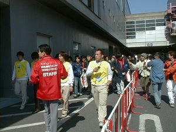
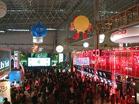
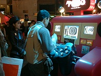
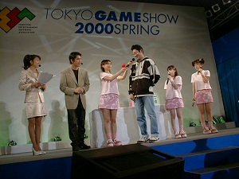
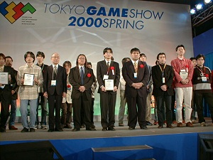
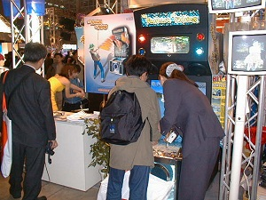
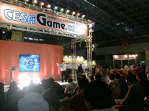
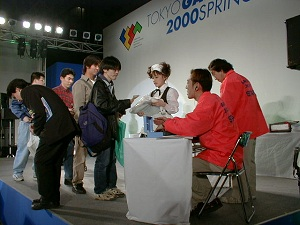

3月31日（金）幕張メッセにて開幕した「東京ゲームショウ2000春」は、いよいよ4月1日（土）から一般公開。
初日も好天に恵まれた「東京ゲームショウ2000春」でしたが、続くこの日は雲ひとつない快晴。あたたかな春の日差しの中、開場前から集合した熱心なゲームファンは24,000人にものぼりました。

ついに動き出した行列、場内はもうすぐ
約400ものタイトルが、来場者を迎えた「東京ゲームショウ2000春」。今回の出展傾向で目立つのは、インターネットをはじめとするネットワーク・通信機能をフューチャーした作品の台頭。そして既製ジャンルに収まらないタイトルの急増が、多様化するファンのニーズをとらえます。
またプラットフォーム別では、プレイステーション2・ドリームキャストという2つの新ハード向ソフトが順調に数を伸ばす一方、携帯ゲーム機向けソフトの増加も目立ちました。
拡がりつづけるコンピュータエンターテインメントソフトウェアの世界を象徴するかのように、各出展社はデモの上映や試遊台の設置に加え、ステージでのショウやアイテムの配布などで来場者にアピール。人気クリエイターやアイドル・声優などのステージも人気を集めました。

熱気あふれる会場内
|

東京ゲームショウならではの、特製試遊台
|
午前のイベントステージでは、「東京ゲームショウ2000春＆日本ゲーム大賞 大クイズ大会」が行われました。
東京ゲームショウと日本ゲーム大賞に関する出題に、会場の参加者が二者択一で解答。正解者には、ゲーム関連レアアイテムなどの豪華な賞品が贈られました。

アイドルグループ「はりMON！」をゲストに、盛り上ったクイズ大会
「東京ゲームショウ'98秋」において好評だった「TOKYOゲーム賞」が、装いも新たに「第2回CESAアマチュアゲーム大賞」として登場。午後のイベントステージで、受賞作の発表授賞式が行われました。
アマチュアゲームクリエイターによるオリジナル作品・応募総数116作品の中からノミネートされたのは10作品。カプコンの三上真司氏らによる審査の結果、栄えある大賞を手にしたのは、『GIGANTIC GEAR』を出品したヒューマンクリエイティブスクールの「G-cube」。他に優秀賞にはグループ「MXUG」と、デジタルエンタテインメントアカデミーの「オチャノミズ乗換組」が、審査員特別賞には、日本電子専門学校の瀧口篤さんと、会津大学のグループ「SIN」が輝きました。
「ノミネート作はいずれも心に残る作品だった」という三上氏の総評からも、わが国の次代のクリエイターたちの頼もしい成長ぶりがうかがわれる授賞式でした。

受賞者と審査員一同、中央の3人が最高の栄冠を手にした「G-cube」
世界の注目を集める東京ゲームショウは、海外からの有力な出展社を迎えています。今回の海外出展は英国大使館、KOSA（韓国）、米国大使館で、多くの人の目を集めていました。
また昨日に引き続き一般公開日である本日も海外からの来場者が目立ち、東京ゲームショウの世界への知名度の広がりを感じさせました。

KOSA（韓国）ブースで人気のフィッシングゲーム
前回新設され好評だった「TGSナビプラザ」が、今回はさらにパワーアップ。イベントステージとレストスペース、そしてインフォメーション・コーナーとめぐりあい広場などの機能を集約。来場者が憩い、出展社の情報を集め、そしてイベントを楽しめるコミュニケーション・ゾーンとして生まれ変わりました。
今回はさらに、CESAが運営するゲーム総合ポータルサイト「CESA GAME.COM」のブースを設置。ネットワーク時代のゲーム情報の水先案内役として、大きな関心を集めていました。また「第4回日本ゲーム大賞」関連のコーナーには、ノミネート作品の展示や受賞タイトルの試遊台が人々をひきつけていました。

ナビプラザにて、人気を呼んだ「CESA GAME.COM」のプロモーション
イベントステージでは16時から、一般公開日の恒例、各出展社の提供による「チャリティーオークション＆大抽選会」が開催されました。
今回のオークションには、16種の限定グッズ、販促用レアアイテムなどゲームファンには大変喜ばれるグッズが登場。続く大抽選会とともにこの日終盤のイベントステージを盛り上げました。オークションの売上げは、ユニセフなどを通じて寄付されます。
この「チャリティーオークション＆大抽選会」は、最終日の4月2日（日）にも行われます（16時から）。

レアアイテムを獲得、喜びの落札者たち
この日の入場者数は、前回の一般公開日初日を上回る63,393人。こうして大盛況のうちに、「東京ゲームショウ2000春」は一般公開日初日を終えました。
2日（日）は開催最終日、よりいっそうの盛り上がりが見込まれます。
皆様、ぜひ東京ゲームショウにお越しください。